チュートリアルだけではわかりにくいものを中心に説明しています。
自習室でとなりに人が座ると少し緊張してなぜか集中できてしまう。あの感じをアプリで再現しています。新しい体験なので初めは迷うかもしれませんが一度やってみるとすぐ理解できると思います。
サイドメニューの「となり」をタップ
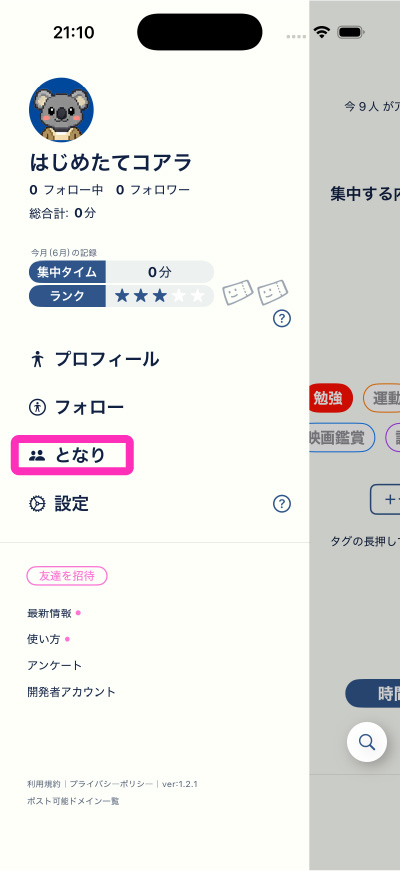
ここには「となりに座る」ウェルカムなユーザーのリストが表示されています。属性が近そうなユーザーのアイコンをタップしてみましょう。
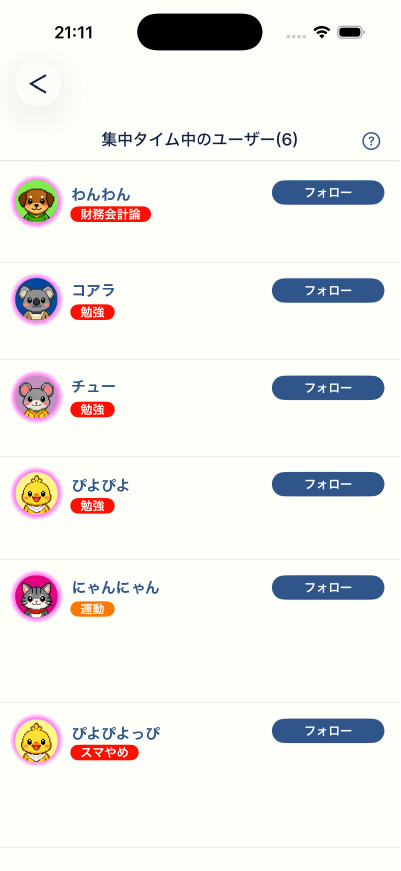
プロフィール画面に進むと「となりに座る」ボタンが表示されているのでこれをタップ
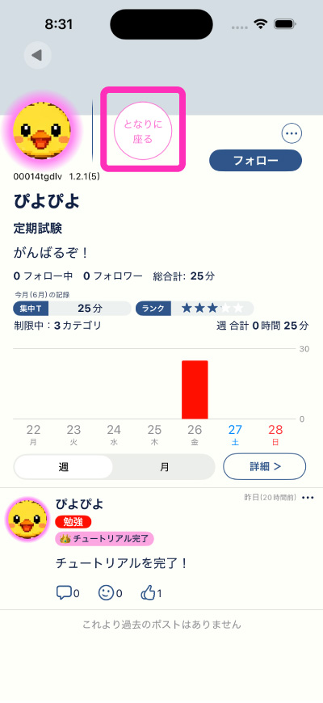
「静かに着席」ボタンを押すと、となりに座るアニメーションが流れるので、そのあとで「タグ」と「時間」を決めてタイマーをスタートさせましょう。
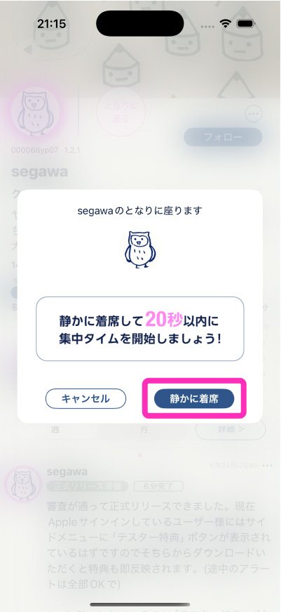
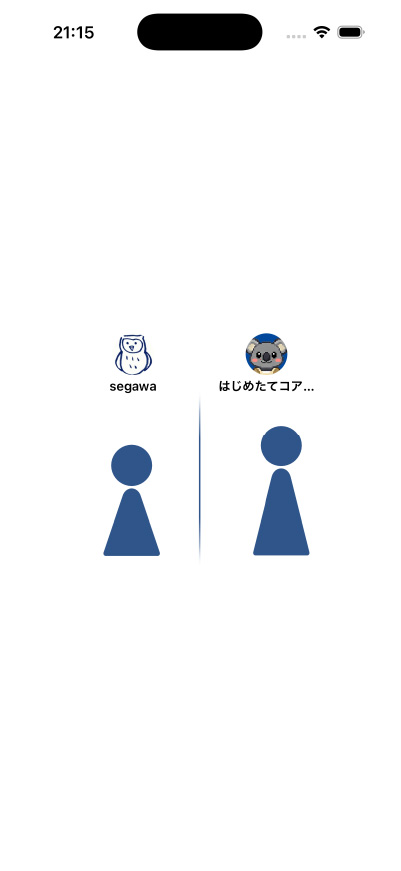
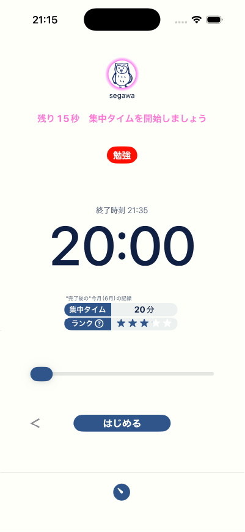
「となりに座る」で集中タイムが完了させると編集チケットがもらえます。このチケットはポストをあとから編集するためのアイテムです。
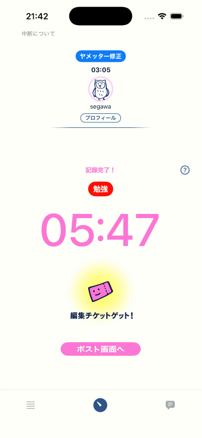
これは文字通り初めは1人で集中するモードです「パートナー検索」の下の「1人で集中」から始めます。
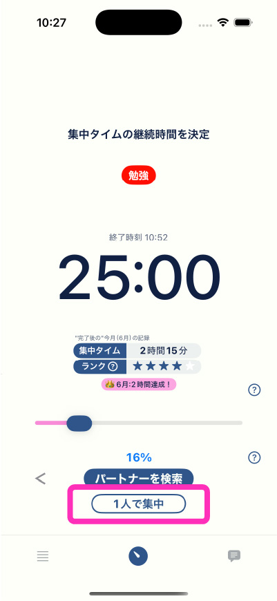
「1人で集中」を始めると「集中タイム中のユーザー」リストに掲載されます。つまりあなたがとなりに座られる側になります。より具体的なタグやプロフにしておくと近い属性のユーザーがとなりに座る可能性が高くなります。
となりに座られると「XXXがとなりに座りました」と通知が届きます。
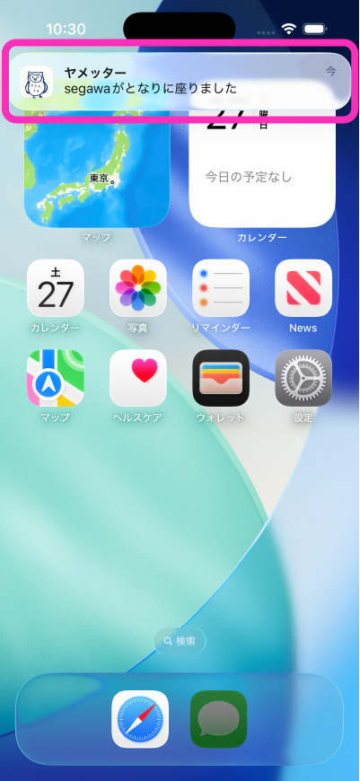
アプリを開くと画面上部にとなりに座ったユーザーのアイコン・タイマー・タグが表示されます。同様に相手にもあなたのタグ・タイマーが表示されています。プロフィールはタイマーが終わってからでないと見ることはできません。
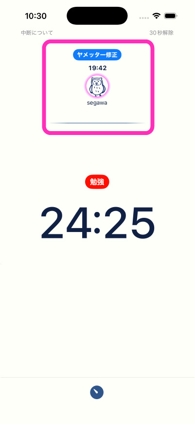
もし本当に1人で集中したい時は「設定」の「となりに座る」のスイッチを全部OFFにしてください。誰もとなりに座ることができなくなります。「☆3以上のユーザーを許可」だけオフにすると相互フォローユーザーのみがとなりに座れます。
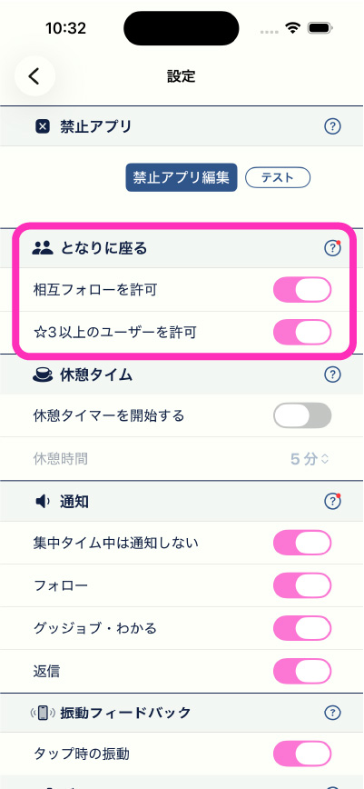
今後も質問が多い項目の解説を追加していきます。ほとんどの項目に(？)ボタンをつけているのでそちらもご参照をお願いいたします。